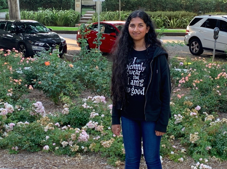
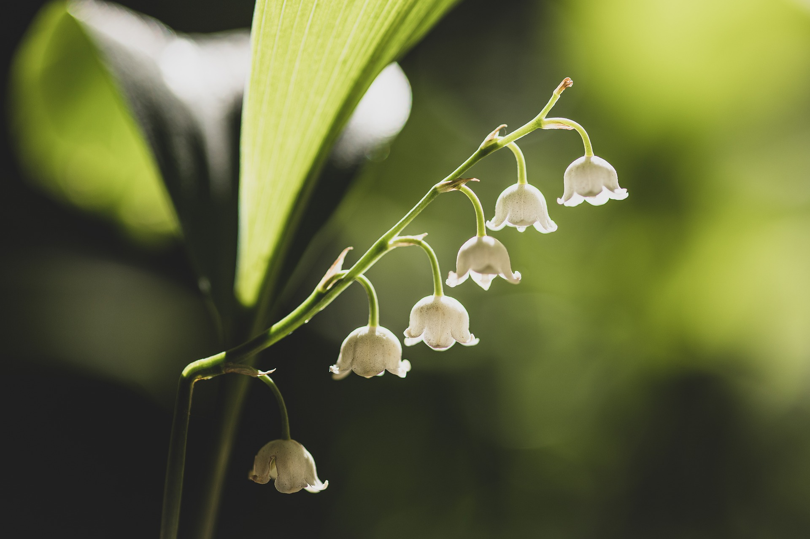
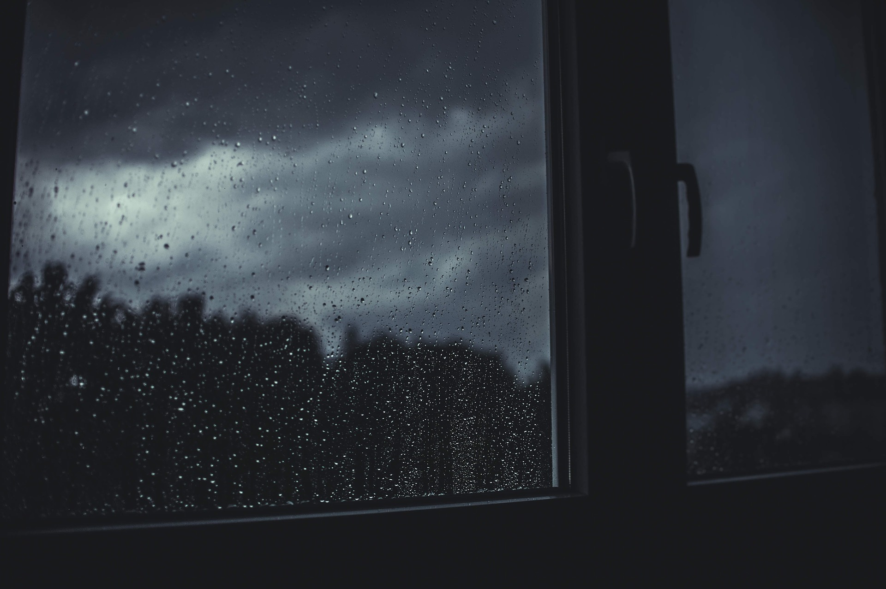
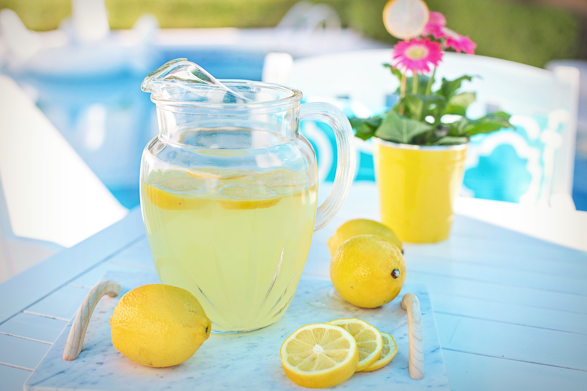
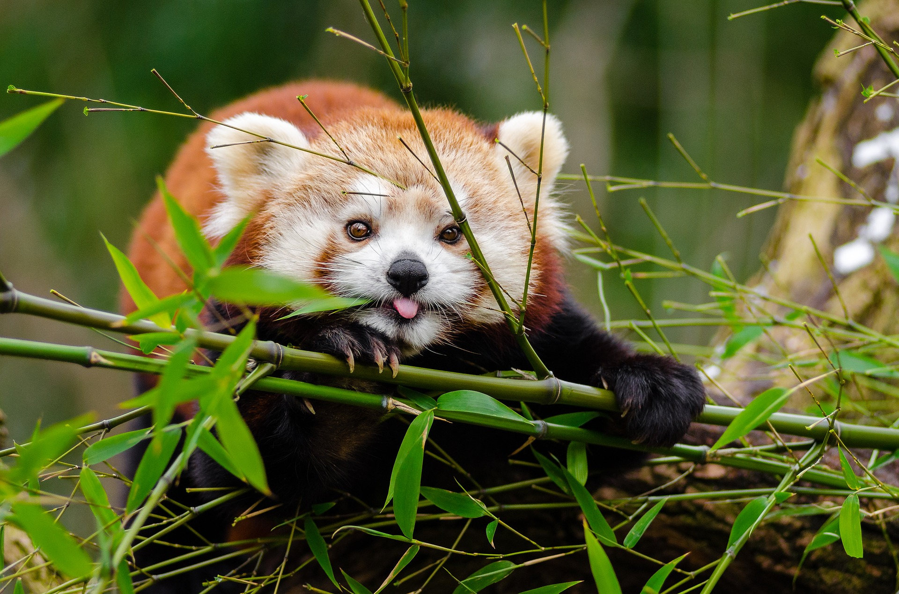

Hello, world! My name is Anisha.
This is a webpage about me. The information here includes some of my interests.
Biography
I am a high school senior who will be graduating soon and going off to college. I intend to major in computer science, though I am also interested in the biomedical field. I hope to become a computer programmer, perhaps one that manages databases for medical information. I would like to create games on the side as a hobby, which I believe that the computer science skills that I will learn in college will help with.
Some of the things that I like to do are reading, playing guitar, singing, and playing games. I also write creatively, and I hope to improve my artistic skills in the visual arts area as well.
My Favorite Quotation
"A gemstone regards itself an ordinary stone without the knowledge that in the future, it can prove itself to be a brilliant jewel." - Cheritz
My Favorite Foods
- Cake
- Cookies
- Pizza
- Chips
- Noodles
Some of My Favorite Supernatural Creatures, In Order
- Mermaids
- Witches/Wizards
- Fairies
- Ghosts
- Dragons
- Vampires
- Phoenixes
- Unicorns
Book Series That I'd Like To Read And Why
- Market of Monsters
- I read the first book recently and liked it
- There are interesting characters that are unique from most books I've read
- There are moments of suspense and disturbing scenes, but nothing too scary for me
- The worldbuilding is great
- There are only 3 books so it wouldn't take long to read
- Red Queen
- I read the first book when it came out and liked it
- The powers used in it and how they work are interesting
- The Waterfire Saga
- I've read the whole series before and liked it
- It's about mermaids, and stories like that are interesting to me
- I own most of the books, so it's convenient
- Percy Jackson
- I've read the Harry Potter series, and they seem to appeal to the same demographic
- It is centered around Greek mythology, which is interesting
- The Lunar Chronicles
- I read the first book in middle school and want to give it a second chance
- The plot seemed interesting but there seemed to be a lot that bored me
- There may be an animated movie of the series soon, so I'd like to read the books and then watch it
Other Favorite Things
| Favorite Flower | Lily of the Valley |  |
|---|---|---|
| Favorite Time of Day | Past Midnight | |
| Favorite Weather | Rainy |  |
| Favorite Drink | Lemonade |  |
| Favorite Animal | Red Panda |  |
| Favorite Color | Blue (all shades) |  |
Contact Information
Email: ashashidhar6210@cabarrus.k12.nc.us
Phone: 123-555-6645